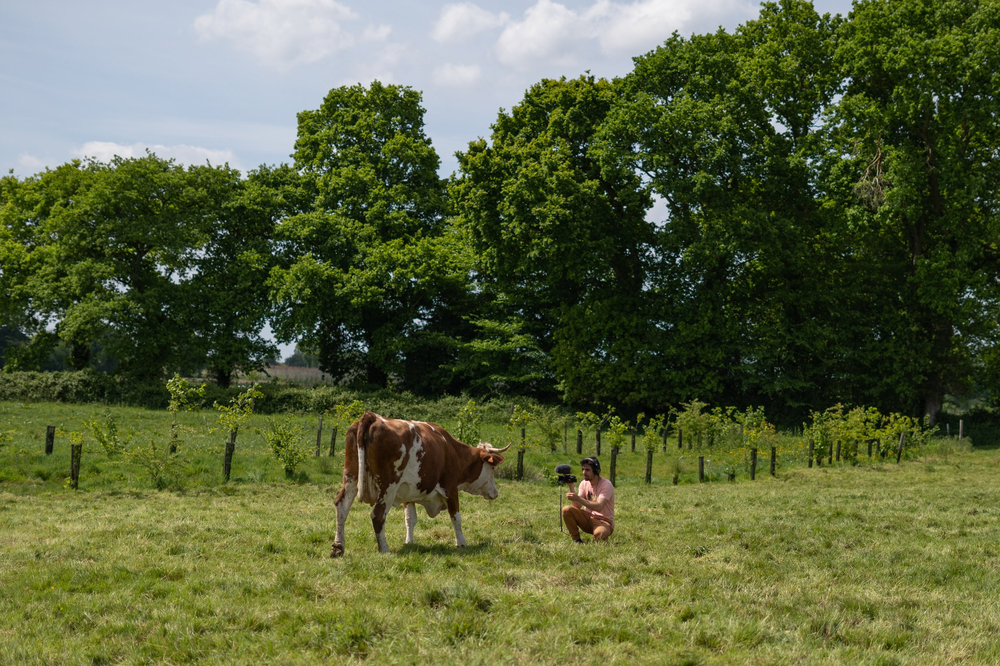

Des vidéos engagées au côté du milieu agricole et rural

Le Projet
Un projet bénévole engagé pour documenter et soutenir le milieu agricole et rural en Bretagne. Nos vidéos et podcasts explorent les défis et les opportunités du renouvellement agricole.
En savoir plusDernières réalisations
L'avenir est dans nos bottes
Des vidéos et podcasts pour des fermes nombreuses en Bretagne
📺 Regarder sur YouTube 🎧 Ecouter en podcast